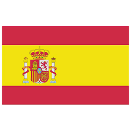

Le drapeau de l'Espagne. Il est composé de trois bandes horizontales, deux rouges en haut et en bas et une jaune, deux fois plus large que les rouges, au centre. Au-dessus de la bande jaune se trouve le Bouclier national. Il a été adopté en 1785.

L'hymne national de l'Espagne. Elle est connue sous le nom de « La Marche Royale ». Il a été popularisé sans paroles, il n'est donc pas chanté pendant sa représentation. L’auteur de sa musique n’est pas non plus connu avec précision. La Marche Royale est utilisée comme hymne national depuis 1936.
Les armoiries du roi d'Espagne. Le bouclier est divisé en quatre quartiers qui représentent les royaumes historiques d'Espagne. En haut à gauche, la Castille (représentée par un château en rouge sur fond blanc) ; en haut à droite, Lion (représenté par un lion en lilas sur fond blanc) ; en bas à gauche, Aragon (représenté par des barres rouges et dorées en forme de croix de Saint-Georges sur fond blanc) ; et en bas à droite, Navarra (représenté par des chaînes dorées sur fond rouge). Au centre se trouve un écu ovale bleu représentant les emblèmes de la maison de Bourbon, à laquelle appartient la famille royale espagnole. Au-dessus du bouclier se trouve une couronne royale. De chaque côté du bouclier se trouvent deux piliers d'Hercule avec une bande indiquant « Plus Ultra » (latin pour « Au-delà »). Il a été adopté en 1981.